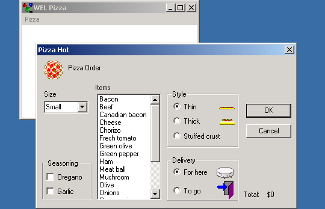

Pizza Sample

Compiling
To compile the example:
- Launch EiffelStudio.
- Select Use existing Ace (control file) and click OK.
- Browse to Eiffel50\examples\wel\pizza\.
- Choose Ace.ace
- Choose the directory where the project will be compiled, by default the same directory containing the Ace file.
If you select another directory than the default one, please copy icons
(*.ico) and resource files (*.rc) from the
default directory (the one containing the Ace file) to the new
one.
- Click OK.
Running
After launching the program, a window will be displayed titled "WEL Pizza" If you select "Order" from the "Pizza" menu, a new window will appear (Illustrated above), which allows
you to enter details of a new pizza order. When the order is completed, clicking the "ok" button will display the details of the order that was entered. Selecting "Exit from the "Pizza" menu or
closing the original window will exit the program.
Under the Hood
MAIN_WINDOW inherits WEL_FRAME_WINDOW while
DIALOG inherits WEL_MODAL_DIALOG. DIALOG demonstrates
the use of a selection of common controls to build a custom user interface.
This sample contains the following classes: